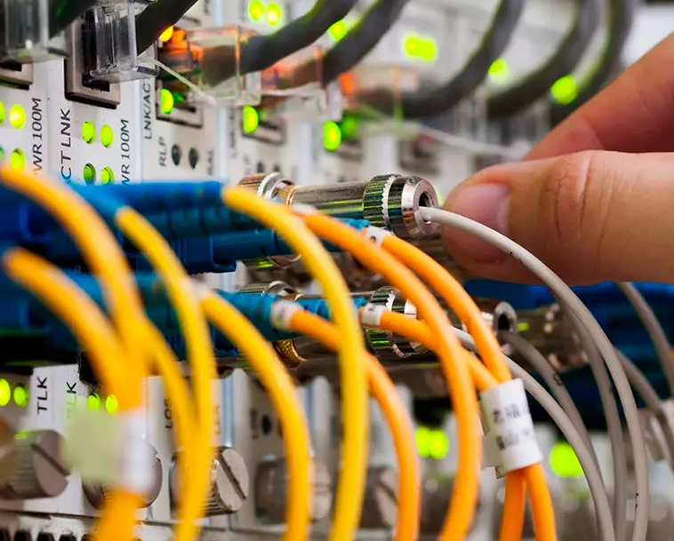

Redes Industriais e PROFINET
As redes industriais conectam equipamentos e permitem a troca de informações necessárias para controlar e monitorar processos automatizados. Entre essas tecnologias, o PROFINET se destaca por utilizar Ethernet e oferecer comunicação entre controladores e dispositivos industriais.
Desenvolvido pela organização PROFIBUS & PROFINET International (PI), o PROFINET é utilizado em aplicações que exigem troca de dados, sincronização e diagnóstico dos equipamentos de uma planta industrial.

O que é o PROFINET?
O PROFINET é um padrão de comunicação industrial baseado em Ethernet. Ele permite conectar controladores, como CLPs, a dispositivos de campo, como módulos de entradas e saídas, sensores, atuadores e inversores de frequência.
Diferentemente de uma rede Ethernet utilizada apenas para navegação na internet, uma rede PROFINET pode ser configurada para atender às exigências de tempo e confiabilidade de processos industriais. Sua aplicação depende dos dispositivos, da configuração e da infraestrutura da rede.
Ethernet industrial
Utiliza uma infraestrutura Ethernet com cabos, conectores e equipamentos apropriados para as condições de operação industrial.
Comunicação em tempo real
Permite atualizar dados de processo em intervalos definidos, atendendo às necessidades de velocidade e determinismo de diferentes aplicações.
Integração de equipamentos
Conecta dispositivos compatíveis para que o controlador possa receber informações e enviar comandos sem depender de uma ligação individual para cada dado
Diagnóstico integrado
Disponibiliza informações sobre o estado dos dispositivos e possíveis problemas de comunicação, facilitando a identificação de falhas e a manutenção.
Como funciona a comunicação?
Em uma aplicação típica, o CLP atua como controlador da comunicação com os dispositivos de campo. Ele troca dados com os equipamentos configurados, executa a lógica do programa e atualiza as saídas de acordo com o processo.
IO Controller
Geralmente é o CLP responsável por controlar a comunicação cíclica com os dispositivos de entrada e saída e utilizar os dados recebidos na execução do programa.
IO Device
É o dispositivo de campo que fornece ou recebe dados do controlador, como módulos de entradas e saídas, equipamentos de medição e outros dispositivos compatíveis.
IO Supervisor
É uma estação de engenharia ou supervisão que pode acessar informações dos dispositivos para configuração, monitoramento e diagnóstico, conforme suas permissões.
Troca de dados
O controlador recebe valores de entrada, processa as condições programadas e envia os comandos necessários aos dispositivos de saída.
RT, IRT e comunicação acíclica
O PROFINET possui mecanismos diferentes para atender aplicações com necessidades variadas de comunicação. A escolha depende da precisão temporal exigida pelo processo.
PROFINET RT
O Real Time utiliza mecanismos de comunicação em tempo real para transmitir dados de entrada e saída com menor atraso e comportamento mais previsível do que uma comunicação Ethernet comum sem priorização adequada. É utilizado em muitas aplicações de automação industrial.
PROFINET IRT
O Isochronous Real Time é destinado a aplicações que exigem sincronização precisa, como determinados sistemas de controle de movimento. Ele utiliza mecanismos específicos de sincronização e planejamento da comunicação.
Comunicação cíclica
Transporta periodicamente os dados de processo entre o controlador e os dispositivos, como estados de sensores, posições e comandos de acionamento.
Comunicação acíclica
É utilizada para tarefas sob demanda, como leitura de parâmetros, configuração e consulta de diagnósticos. Complementa a troca periódica dos dados de processo.
Topologias e equipamentos
A rede PROFINET pode ser organizada de diferentes maneiras. A topologia escolhida influencia a instalação, a expansão da rede e a forma de localizar falhas.
Topologia em linha
Os dispositivos são conectados em sequência. Pode reduzir a quantidade de cabos até o switch, mas uma interrupção em um trecho pode afetar os equipamentos seguintes, dependendo da instalação.
Topologia em estrela
Os dispositivos se conectam a um switch central. Facilita a organização e a expansão, embora uma falha no equipamento central possa afetar vários dispositivos.
Topologia em anel
Os equipamentos formam um circuito fechado. Quando configurada com mecanismos de redundância compatíveis, pode permitir a recuperação da comunicação apósdeterminadas falhas de conexão.
Cabos e switches
Cabos Ethernet industriais, conectores adequados e switches compatíveis ajudam a manter a qualidade da conexão em ambientes sujeitos a vibração interferência e condições severas.
PROFINET na bancada de automação
Em uma bancada industrial, um CLP compatível pode trocar dados por PROFINET com módulos de entradas e saídas remotas ou inversores de frequência compatíveis. O controlador recebe sinais dos sensores, executa o programa e envia comandos aos equipamentos.
Para que a comunicação funcione, os dispositivos precisam ser compatíveis e estar configurados corretamente, com nomes de estação, endereços IP e parâmetros de rede adequados à arquitetura utilizada.
Diagnóstico e manutenção
Quando um dispositivo deixa de comunicar, podem surgir falhas relacionadas ao cabo, ao switch, à alimentação, à configuração ou ao próprio equipamento. As ferramentas de diagnóstico ajudam a identificar a origem do problema e reduzir o tempo de parada do processo.
Cuidados na instalação
Uma rede industrial confiável depende tanto do protocolo quanto de uma instalação adequada e de uma configuração bem planejada.
Separação de redes
A segmentação da rede e o controle de acesso ajudam a limitar comunicações desnecessárias e a reduzir riscos de segurança.
Configuração correta
Nomes dos dispositivos, endereços IP e parâmetros precisam corresponder ao projeto e à configuração do controlador.
Manutenção preventiva
Inspecionar cabos, conectores, alimentação e indicadores dos equipamentos ajuda a prevenir falhas de comunicação.
Monitoramento
Acompanhar diagnósticos, alarmes e estados da rede facilita a identificação de problemas antes que provoquem paradas prolongadas.